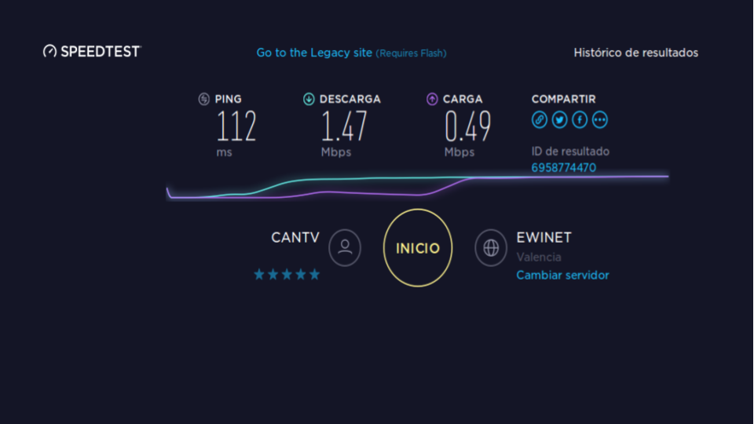

-
 /home
/home
- Workshops


Informaticos15


Universidad
Pedagogica
Experimental
Libertador

Instituto
Mejoramiento
Profesional
Magisterio
Para prácticamente cualquier usuario regular de internet en Venezuela no es un secreto que la conexión a esta red en el país es, al menos, deficiente. No se necesita ser un experto en temas de informática para saber que el servicio no está ni siquiera cerca del nivel óptimo; y para quienes son usuarios regulares desde hace años, muy probablemente al preguntarles, dirán estar seguros, aún sin tener datos oficiales, que la velocidad de la conexión a disminuido en los últimos años. Esta percepción no es errada, sin embargo no es del todo cierta
La velocidad de transmisión de datos a través de internet (aunque técnicamente se debe hablar de flujo de datos en lugar de velocidad) se mide en base a bits por segundo (bps o b/s), pero más comúnmente se presenta en términos de miles de bits por segundo (Kbps o kb/s) o millones de bits por segundo (Mbps o Mb/s). A su vez, para hablar de la velocidad de una conexión a internet se toman dos medidas: la velocidad de descarga o “bajada desde internet”, es decir, es decir, la velocidad con que un proveedor de servicios de conexión a internet “trae” información hacia el aparato a quien presta el servicio (por ejemplo al ver un video en youtube); y la velocidad de carga o “subida a internet”, es decir, la velocidad con la que el proveedor lleva información desde el cliente hasta algún otro punto en la web (por ejemplo, cuando queremos subir una foto desde nuestra pc a Facebook y luego publicarla). Estas dos velocidades casi nunca son iguales, a veces estando muy lejanas, siendo la de subida casi siempre la menor.
Lo cierto es que la velocidad promedio del internet en Venezuela ha aumentado en los últimos años, sin embargo este aumento está muy lejos del porcentaje de aumento que ha experimentado las velocidades promedio de casi todos los países del mundo, y la distancia con respecto a los primeros lugares en el ranking de los países con mayor velocidad de conexión a aumentado tanto en cuantitativamente como porcentualmente
Daniel Rodríguez (2011) reseña que la velocidad de internet en Venezuela, según OOKLA a través de su servicio netindex.com, era (en el período del 22 de Febrero de 2009 al 24 de Agosto de 2011) 0.95 Mbps para la descarga y 0.36 Mbps para la carga, dejando en ese entonces al país el puesto 159 de un total de 172 países del ranking para la descarga, y en el 159 de un total de 172 países del ranking para la carga, y muy lejos de los líderes de tales ranking: Lituania (31.16 Mbps) y Corea del Sur (26.39 Mbps), respectivament
Sin embargo, como siempre, la tecnología avanzó y las velocidades a nivel mundial se han incrementado. Para Diciembre de 2017, según el Índice Global de velocidades de internet de Speedtest (Speedtest Global Index), las velocidades promedio a nivel mundial eran 21.25Mbps para descarga y 8.88 Mbps para carga (para conexiones móviles) y 40.71 Mbps de descarga y 20.33 de carga (para conexiones fijas). En las conexiones fijas, el líder indiscutible es Singapur con 161 Mbps de promedio en descarga. Por su parte, Venezuela ocupaba un lamentable penúltimo lugar, 128 de 129 países, con una velocidad promedio de 3.65 Mbps. De hecho, al momento de escribir esto, el Speedtest arrojó que mi velocidad de conexión era de 1.34 Mbps y 0.38 Mbps para descarga y carga, respectivamente. Sin embargo, aunque muy bajo y muy lejos del promedio mundial, esta velocidad es en efecto superior a las del periodo 2009 - 2011
al momento de escribir esto, el Speedtest arrojó que mi velocidad de conexión era de 1.34 Mbps y 0.38 Mbps para descarga y carga
Como se puede apreciar en las cifras anteriores, la percepción general no es muchas veces totalmente cierta pero la idea de que la velocidad se ha reducido es falsa. Sin embargo, la percepción puede deberse a que a medida que la velocidad del internet crece a nivel mundial, las páginas web más visitadas tienden a volverse más pesadas incluyendo más información que transmitir sabiendo que con esas nuevas capacidades de transmisión no se disminuye la experiencia del usuario promedio, pero dado que Venezuela está quedándose cada vez más atrás con respecto a ese crecimiento, para el venezolano promedio la experiencia de usuario se ve cada año más afectada y de ahí puede provenir la sensación de que la conexión es cada vez más lenta en cantidad total de información transmitida
Más allá de la magnitud exacta de flujo de datos, quizá uno de los problemas más habituales y frustrantes para el usuario en los últimos años es la cantidad de caídas de señal (durante los cuales obviamente la velocidad es 0 mbps) que además que parecen ser cada vez más frecuentes, también parecen durar cada vez más tiempo.
En cuanto a las posibles causas de la más que deficiente calidad del servicio, una conclusión rápida que se puede sacar, basado en los datos antes mostrados, es que hay una insuficiente inversión en tecnología, pues es claro que los avances tecnológicos que permitirían aumentar sustancialmente la velocidad ya existen en el mercado, sin embargo parece lógico pensar que no han sido implementados.
Sobre la falta de inversión, reseña Pardo(2014) que el periodista digital Luis Carlos Díaz afirmó: "el problema de internet es como el problema de las vías: mientras ha crecido el número de usuarios, las vías no se han ampliado y hemos llegado a un punto de saturación". Añadió: "por eso es que, por ejemplo, los domingos por las noches, como hay tanta gente conectada, la internet es tan lenta".
Es importante señalar que el flujo de datos o velocidad del internet, en teoría depende de cada proveedor de servicios, por lo tanto se podría pensar en evaluar la responsabilidad general de cada empresa proveedora del servicio sobre la inversión en infraestructura. El problema entonces surge al notar que para realizar esa inversión de materiales casi siempre fabricados en el extranjero, se requiere acceso a dólares, los cuales en Venezuela están limitados a la asignación por parte del Estado. Sobre esto, Díaz, citado por Pardo, señala que "como en todas las industrias en Venezuela, las telecomunicaciones no han obtenido de parte del Estado los dólares para importar repuestos y nuevas tecnologías, por lo que sus sistemas y productos se han deteriorado"
Díaz también es citado por Daniel Kcomt (2017), y apunta que “Cada dólar que se le ha negado a las telecomunicaciones, desde hace años, hoy se paga en fallas, caídas y lentitud. En este momento las empresas están operando a pérdida, y aunque aumenten las tarifas seguirán recibiendo bolívares. Nada de eso les permitirá importar piezas nuevas, contratar mayores velocidades, renovar equipos. Nada. A lo sumo cubrirán los aumentos salariales de sus trabajadores, pero siguen a pérdida. Viven años de contracción”
Sin embargo el mercado en Venezuela esta en en su mayoría, más o menos 60%, en manos de la empresa del estado CANTV, la cual se supone no tendría los problemas de las empresas privadas para el acceso a dólares con los cuales comprar en el exterior los implementos necesarios para mejorar el servicio. Es entonces cuando entra un hecho.
Un hecho que demuestra la diferencia que puede lograrse al hacer la inversión apropiada en infraestructura es que, según señala Pardo, a pesar del promedio de 2 Mbps que tenía el país en 2014, para ese momento la empresa privada IPNET lograba una conexión de hasta 70 Mbps, según el test de Ookla.
Aunque el gobierno no oculta que su política de estado con respecto al acceso a internet está más orientado hacia un mayor número de usuarios que a una mayor calidad de servicio, por mucho tiempo no ha sido la mejora en el servicio una meta de alto nivel de urgencia para el gobierno pues desde el 22 de marzo de 2009, mediante publicación en la Gaceta Oficial Nº39.146, internet fue eliminado de la lista de prioridades de inversión para la nación.
Daniel Pardo recuerda “que el gobierno venezolano sostiene que sus políticas han logrado la democratización y masificación de la internet en el país” pero aunque el actual gobierno desde su llegada en 1999 ha instalado ya más de 800 Infocentros con acceso a internet por todo el país, según cifras oficiales, para 2014 44 de cada 100 venezolanos tiene acceso a internet, lo cual es una cifra inferior al promedio en la región, que era 54%.
Díaz, citado por Duarte, asegura que “es una decisión política que Cantv tenga una conexión tan lenta, los dividendos se están usando para pagar deudas del gobierno y no para mejorar la infraestructura”.
Es difícil no concluir que la verdadera causa o principal razón de los problemas de conectividad en Venezuela surgen de la falta de disposición a invertir en una red de calidad y no en centrarse en expandir la red existente de una manera desenfrenada y sin control alguno, pensando más el número de usuarios que en la calidad del servicio. Dado que la tecnología de telecomunicaciones cambia y mejora a un ritmo muy acelerado, aumentado cada año el promedio de velocidad de conexión a nivel mundial, y con ella se incrementa también las exigencias de las principales y más visitados sitios web, parece claro que la clave para mantenerse al día con las nuevas exigencias está en un inversión fuerte y constante, y no solamente una inversión insuficiente y esporádica, por lo que para lograr que algún día Venezuela alcance los estándares globales, se requiere que los servicios de internet sean autosustentables, para pagar los costos actuales del mantenimiento del servicio, pero además para asegurar las inversiones que necesariamente se deberán llevar a cabo
Otros sitios de interes
Referencias
- Duarte, M. (2016). El internet no es prioridad de inversión para Venezuela. Recuperado el 4 de Enero de 2018 desde https://www.larazon.net /2015/08/el-internet-no-es-prioridad-de-inversion-para-venezuela/
- Kcomt, D. (2017) Lentitud de conexión a internet dificulta desarrollo de Venezuela. Recuperado el 2 de Enero de 2018 de https: http://uma.edu.ve/periodico/2017 /01/30/lentitud-conexion-internet-dificulta-desarrollo-venezuela/
- Pardo, D. (2016) ¿Por qué internet en Venezuela es tan lento?. Recuperado el 5 de Enero de 2018 desde http://www.bbc.com/mundo/noticias/2014/09/140922 _venezuela _internet_lento_dp
- Rodriguez, D. (2011). Velocidades de Conexión a la Internet / Venezuela vs. El Mundo. Recuperado el 2 de Enero de 2018 de https://tecnosoluciones.com/article/284/ velocidades-de-conexion-a-la-internet-venezuela-vs-el-mundo